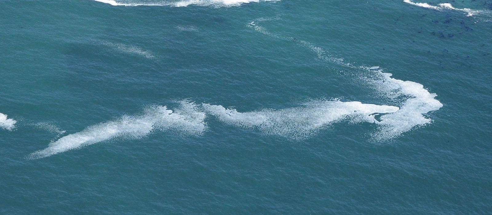
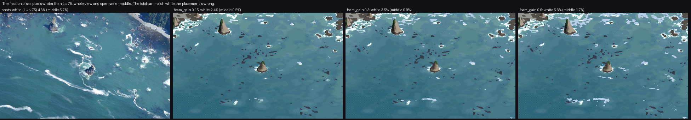
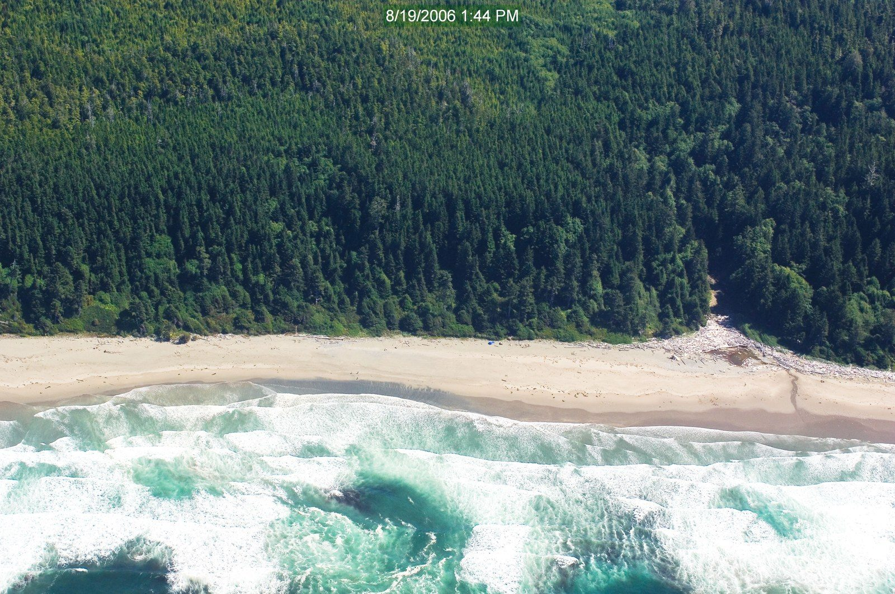
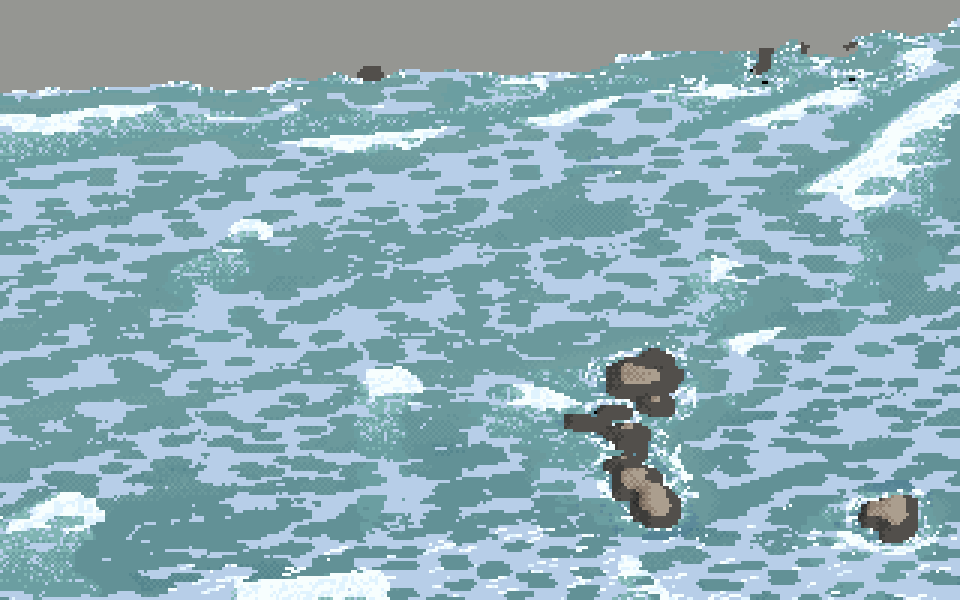
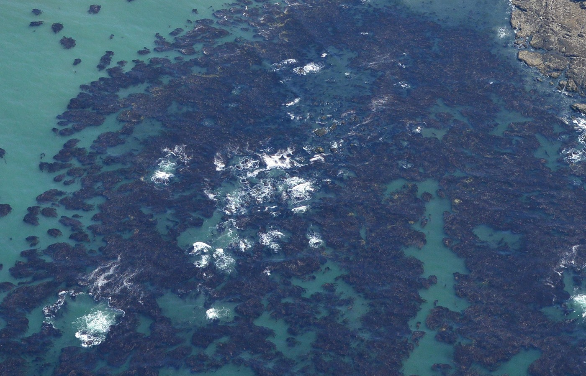

What it's for. It says honestly what isn't there, with the images, what I think the cause is, and the next thing I'd try. Two critics looked at my work cold, and I quote them. One finding here is new: I only saw it while making the figures for these pages.
The most characteristic thing in the Point of the Arches photo is the long foam ribbons in open water: 150–300 m, a crisp bright leading edge, a soft tail. Mine are plumes a third that length, clinging to the rocks.

A full-resolution crop of the photo's streaks (notes/poa_streak.png).
I had calibrated foam by the photo's white fraction: sea pixels whiter than L* 75, 4.6% in the photo against 4.7% for me at foam_gain 0.3. Rerunning the calibration with the final code for these pages:

figs.py calib. Over the whole view: photo 4.6%, mine 3.5% at the shipped gain. In the open-water middle: photo 5.7%, mine 0.9%.
Two lessons, one of each kind.
Why, as far as I can tell. It's arithmetic on my own parameters. A long-lived particle survives τ_f = 450 s on average. At my drift of ~0.25 m/s it travels ~110 m in that time, which is about the length of my plumes. A 250 m streak therefore needs foam that lives 15–20 minutes, or a current two or three times faster. In the photo the streaks start at reef gaps and run straight out to sea, which looks like a jet (rip-current-like outflow from the reef, or tidal flow round the point) rather than a slow uniform drift with eddies. So there are two changes to try: a jet current, from the surf zone's return flow through gaps in the reef (wave setup drives it; the ray solve's energy flux could give the setup, though I haven't computed it), and a longer tail on the foam lifetime distribution. A lane with a real current field may get the streaks for free.

Shi Shi Beach, August 2006, a big swell on a sand beach. Every crest is spilling. There are broad bore bands along the shore, dark teal troughs between them, and foam that thins toward the beach.

Kalaloch, storm (Hs 5.5 m, 14 s, 18 m/s wind), 1 m/px, final. It's no longer marbled (how-to 4), but it's still an even field of blobs.
The second critic, on the storm row: "Shi Shi shows broad foam bands running parallel to the shore, with dark teal troughs between them, foam that thins offshore and a clear wave direction. The storm panels also sit at one flat mid value with no darks."
Why. My first diagnosis was wrong. In my lessons I wrote that per-crest breaking breaks "only ~20% of crests" in the storm. Measured while writing this page, in the Kalaloch storm's saturated zone (Q_b > 0.6), 77% of cells are breaking at the rendered instant; at Point of the Arches, 87%. The breaking is fine. What is saturated is the old foam: the storm run left 8.3 million particles, and over the surf zone their coverage Fe is at its cap (median 0.83, 10th percentile 0.37). The whitewater W does vary with the bores, 0.03 to 0.75 between the 10th and 90th percentiles, which is the band structure Shi Shi shows. But it's buried under a uniform sheet of old foam, and the threshold noise turns that sheet into even blobs. Two changes to try:
The critic's other point, that calm and swell look too alike on the reef ("swell only adds a few flecks"), is a separate problem. Summer swell barely reaches the reef heads in the cove's interior, because the rays spread it (how-to 2). The photo, taken at that same swell, shows more white than my swell panel does, which points back to section 1: the foam is in the wrong places.
The second critic: "The beds are solid navy blobs, where the Cape Alava photo shows brownish, speckled, holey mats with ragged edges." My measurement said navy: the kelp mat's L* 29, a* +3, b* −20. I now think that number is mostly sky glare on wet blades, measured on one sunlit frame. The ground photos (refs/ground/bull_kelp) are brown-gold floats and blades. I compromised in the palette, which pleased neither.

Cape Alava, full resolution (notes/ca_kelp.png): clotted lobes 3–8 m across, turquoise channels between them, satellite blobs at the edge, and white boils where waves break over rock under the mat.
The mat shape also wants what the foam got: holes (the channels between clumps) and ragged edges from a thresholded noise, not a filled contour. The rank-uniformised mat is the right amount in the wrong texture.
Golden hour reads as "a green-grey tint" (second critic), and dusk loses its foam. How-to 5 has my reading: foam needs a sky-mirror term. Both of these lights are set by my reading of ground photos, not measured on obliques.
q and particle age, so a frame is a recompute at a new t_now. I made no clips.Trust: the sea's colour by depth and bottom in sun (water median L* 47 against the photo's 48); the placement of surf, which comes from refraction and pinnacle depth over real lidar, with points loud, coves quiet and reef heads white; the crescent shape of each break; the jade pool; and the relighting to overcast and fog.
Don't trust yet: the streaks, the storm, the eye-level view, kelp's material, and my own calibration number unless you rerun it.